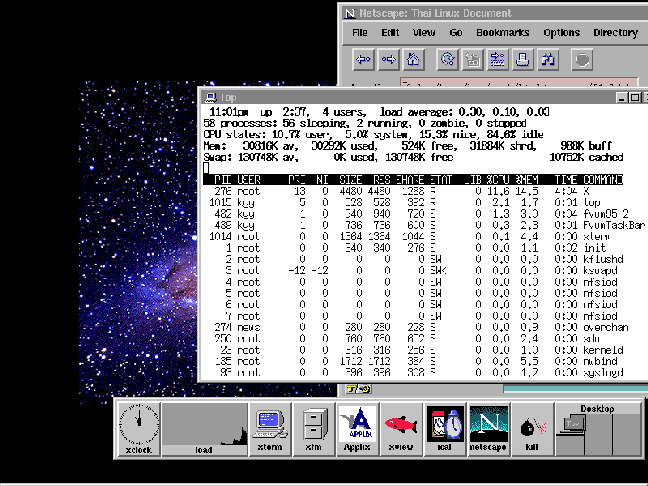

การติดตั้งภาษาไทยอย่างง่ายๆ บนลีนุกซ์
ในที่นี้จะเป็นการติดตั้งภาษาไทยบนระบบ X window
ระบบ X window คืออะไร
X window เป็นโปรแกรมซึ่งทำการสร้างขึ้นมาครอบ บนระบบปฏิบัติการอีกที โดยระบบ X window จะทำให้เราสามารถใช้งานคอมพิวเตอร์ โดยผ่านทางรูปภาพแบบ กราฟฟิค และเมาส์ได้ ซึ่งเป็นระบบอินเทอร์เฟสที่เราเรียกว่า GUI (Graphical
User Interface) ระบบ X window จะถูกใช้งานกันมากในคอมพิวเตอร์ตระกูลยูนิกซ์ แต่จริงๆแล้ว X window มีใช้งานกับระบบปฏิบัติการเกือบทุกตระกูล ซึ่งรวมทั้งระบบ WINDOWS ของไมโครซอฟต์ด้วย

ระบบ X window ถูกออกแบบมาให้ทำงานแบบ Client-Server ซึ่งระหว่างตัว
Client และ Server อาจจะอยู่บนเครื่องเดียวกัน หรืออยู่คนละเครื่องกันก็ได้โดยที่เครื่องเหล่านั้นจะต้องเชื่อมต่อกันเป็นระบบเครือข่าย บนโปรโตคอลแบบ TCP/IP
นั่นหมายความว่าคุณอาจจะสามารถทำการรันแอพพลิเคชั่น บนเครื่องอื่นๆ และกำหนดให้มาแสดงผลบนเครื่องของคุณ หรือในทางกลับกัน
X window จะมีระบบจัดการวินโดว์ (window manager) หลายแบบ ซึ่งจะไม่ถูกยึดติดกับตัว X window นี่จะเป็นข้อแตกต่างอย่างเห็นได้ชัดจากโปรแกรม MS WINDOWS
หรือ WINDOW NT ซึ่งระบบจัดการวินโดว์จะถูกผูกติดอยู่กับ ตัววินโดว์อย่างแน่นหนา
การที่เราสามารถเลือกระบบจัดการวินโดว์ ได้หลายแบบ จะทำให้เราไม่ถูกจำกัดกับรูปแบบอินเทอร์เฟสแบบใดแบบหนึ่ง ซึ่งจริงๆแล้วรูปแบบอินเทอร์เฟส (หมายถึงรูปแบบของการคลิกเมาส์ หรือรูปแบบของส่วนไตเติลบาร์ หรืออื่นๆ) เหล่านี้ก็ยังสามารถดัดแปลงแก้ไขได้ตามความชอบของผู้ใช้ได้อีกด้วย
ปกติระบบจัดการวินโดว์ที่นิยมกันในปัจจุบัน จะ